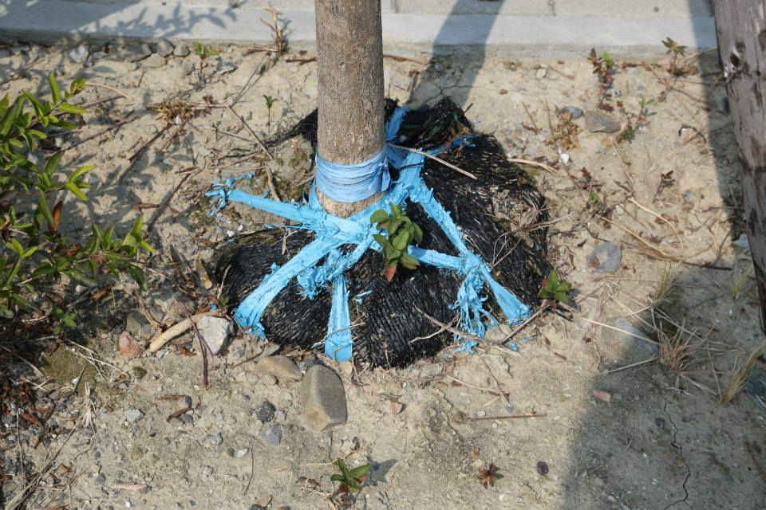

談台灣樹木問題-別再幫樹穿尿褲
護樹協會 September,25,2015
請千萬不要再幫樹木「穿尿褲」了！
至今全台灣所有的植樹工程，園藝包商還是習慣採用這種移植袋，因為施作方便快速，主要製作材質是以布織布縫成圓形狀，底部再縫製一封底的布織布形成圓筒狀，方便種植及施工。
但幾乎所有園藝包商，樹穴挖掘後，直接放入移植的樹木，移植袋是不拿掉的，而且最嚴重的是原本移植袋內的樹木根系土球，都還會被綁上「塑膠繩」固定樹根，這些「塑膠繩」及「移植袋」會是困住樹木根系的殺手，完全會妨礙樹木根系的生長及延伸展開機制，樹木不傾倒才奇怪。